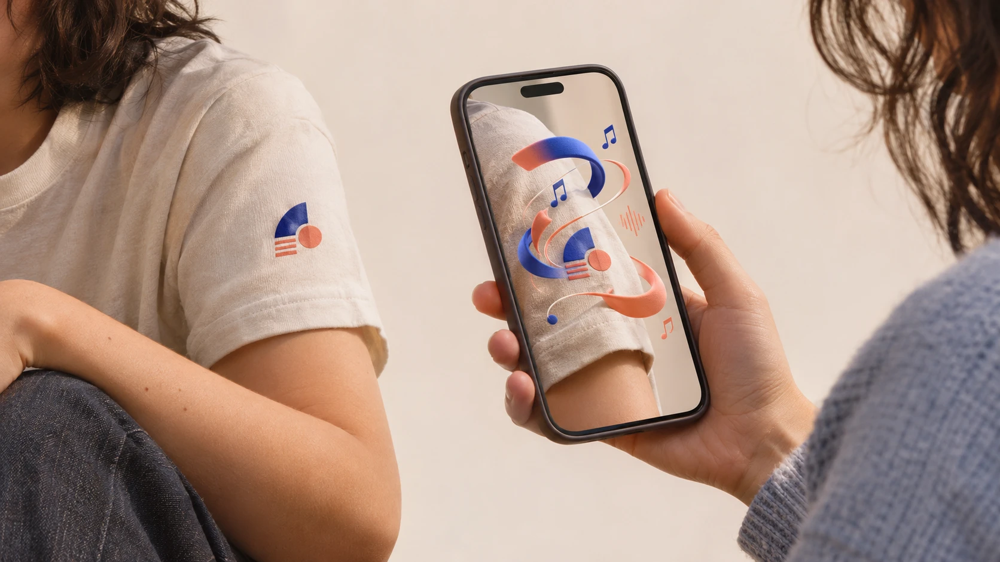

早期体验验证
使用 EyeJack · 第三方工具演示
这段约 48 秒的视频借助第三方 APP EyeJack 展示图案触发 AR 动态效果，用来验证和传达我希望实现的体验。AR Tattoo 的开发目标是小程序版本；视频并非小程序的运行画面。
早期体验验证 · 使用 EyeJack · 约 48 秒 · 点击播放声音

我在追问什么
如果衣服上的徽章、身体上的图案，可以被手机识别，展开一段动画和音乐，日常的物理世界会不会因此更有趣？
我尤其想探索：这种发现，能否成为人与人之间交流的起点。它目前是一项待验证的体验设想。
如何发生
- 01 / NOTICE
发现图案
注意到对方身上的徽章或图案。
- 02 / SCAN
用手机扫描
通过摄像头识别图案，连接对应内容。
- 03 / DISCOVER
遇见隐藏的故事
看到动态效果，听到音乐，再观察它如何影响交流。
下一步实验
下一步是探索小程序实现，先围绕一个图案、一段动画和一段声音制作最小版本。图案识别、内容随图案移动的稳定性，以及动画与音频播放，都需要通过技术原型和真机测试确认。
随后观察参与者是否愿意扫描、能否理解内容，以及扫描之后是否自然产生交流。记录真实反馈，再决定如何深入。
一起把它做出来
我负责问题定义、体验设计与叙事方向，希望与对 AR 和人与人互动感兴趣的开发者共同探索小程序实现：图案识别、动画与音频呈现，以及真机上的体验验证。
也欢迎设计师和研究者参与内容创作、实验设计与观察。合作范围可以从一个具体的小实验开始。
聊聊 AR Tattoo ↗